第一部分｜建立品牌基础
品牌视觉全案
这节课沿着 Ye Café 的案例，用 AI 把咖啡馆设想做成一套相互呼应的视觉方案。
先看成果：门店、包装、员工用品和开业海报，虽然用途不同，却都延续了温暖、安静的气质，让人愿意坐下来聊方案、理思绪。我们接着拆开看，这份统一感怎样一步步建立。
关键是把已经确定的标识、颜色和空间参考，继续带进下一张图。
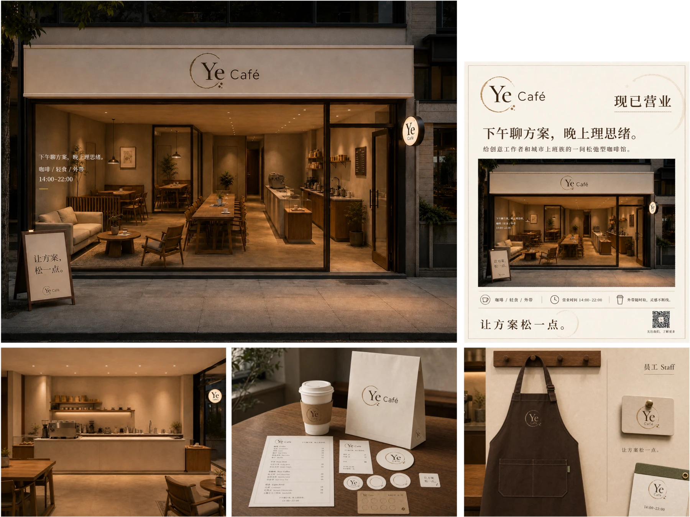
Ye Café品牌全案门店与物料
01｜明确使用场景
先说清人们为什么来，才能决定这个品牌应该长什么样。
只说“高级、极简、温暖”，AI 还不知道店里会发生什么。把服务对象、营业时段和顾客活动告诉它，先整理出品牌定位，确认符合设想，再据此判断后面的设计。
Ye Café 的定位
一家从下午营业到夜晚的城市咖啡馆，服务创意工作者和城市上班族。人们在这里聊方案、轻办公，也给自己留一点整理思绪的时间。
这段定位浓缩成一句品牌表达：“下午聊方案，晚上理思绪。”
案例来源：《模块三_课5_品牌视觉全案》。
02｜建立标识系统
先定下能认出的标识，后面的杯子、纸袋和门头才有共同身份。
定位明确后，把店名与品牌定位发给 AI，请它设计 Logo，也就是品牌标识。确认后的标识图会被反复用作参考，我们把这种固定参照称为“锚点”。
主标识
让 AI 先把 9 个 Logo 方向排成 3×3 九宫格，便于一起比较。选中方向后，再调整文字、图形与比例。本例最后把品牌文字与咖啡杯印般的圆环结合，得到 Ye Café 的主标识。
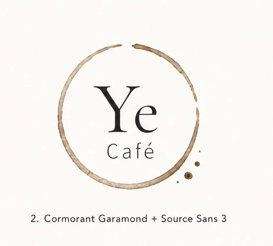
Ye Café主标识
版式系统
同一个标识要放到不同位置，不能只准备一种排法。重新上传主标识，说明横向位置、小尺寸物件和单色印刷等用途，让 AI 延展出主标、横版、字标、图标（Icon）和单色版。逐一检查识别特征是否一致，再一起保存。
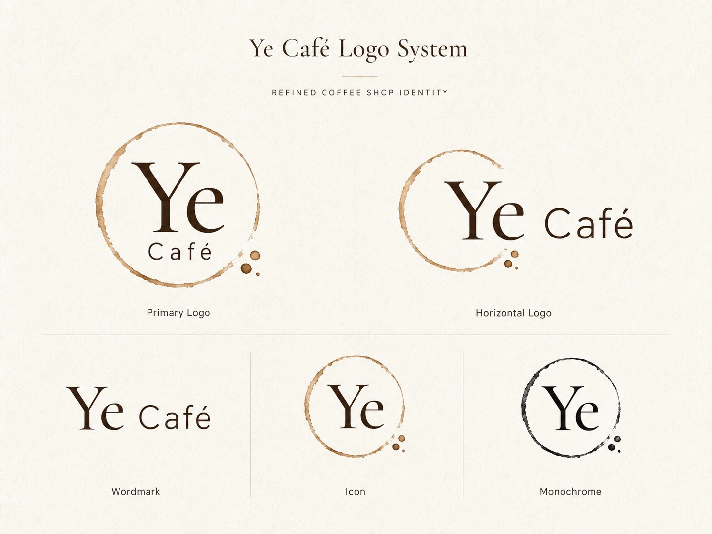
Ye Café标识五版式系统
03｜确定品牌色彩
把“暖一点”落实到具体色值，后续图片就有共同的颜色参照。
标识形状确定后，再给颜色定依据。把低饱和、暖调和纸感写进要求，同时提供下面五种色值，后续物料和空间都沿用这组参照。
| 颜色 | 色值 |
|---|---|
| 奶油纸白 | #F6F0E6 |
| 深咖啡棕 | #3B2A22 |
| 暖木色 | #B8895B |
| 叶绿 | #7C8B6F |
| 城市蓝灰 | #596875 |
使用方法
五种颜色不必每张图都平均分配。可以按用途调整侧重，同时要求 AI 保持稳定的色彩关系，让整套设计放在一起仍能呼应。
第二部分｜延展品牌物料
04｜设计包装用品
基础包装
标识单独看着满意，放到杯子和纸袋上还要再检查。
先把标识文件、色值和包装用途交给 AI，让它设计外带杯、杯套和纸袋，用一组应用图验证标识放上去的效果。
如果某件物料上的标识读不清，指出具体位置，让 AI 针对这张图调整。检查通过的一组再保存下来，下一步纸品就有了可靠参照。
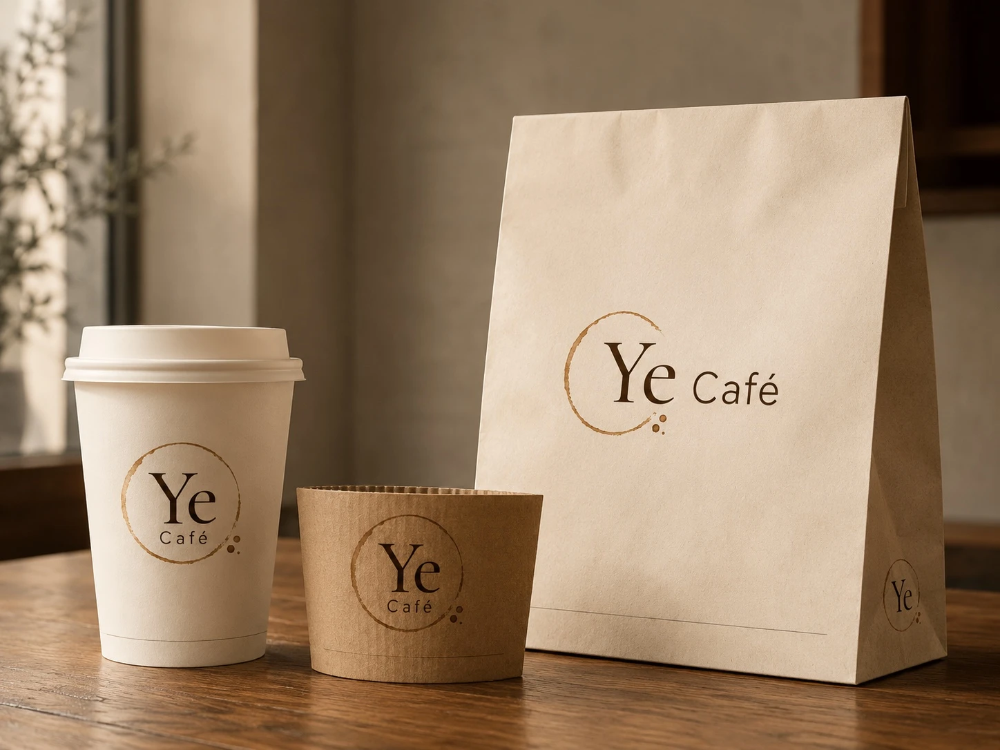
Ye Café基础包装验证
成套纸品
接着增加纸品，继续沿用杯子和纸袋里已经确认的规则。
杯子和纸袋的效果确认后，我们把这组图片连同品牌资料发给 AI，请它扩展出小票、杯垫、贴纸和集点卡，并与配套菜单组成一套物料。
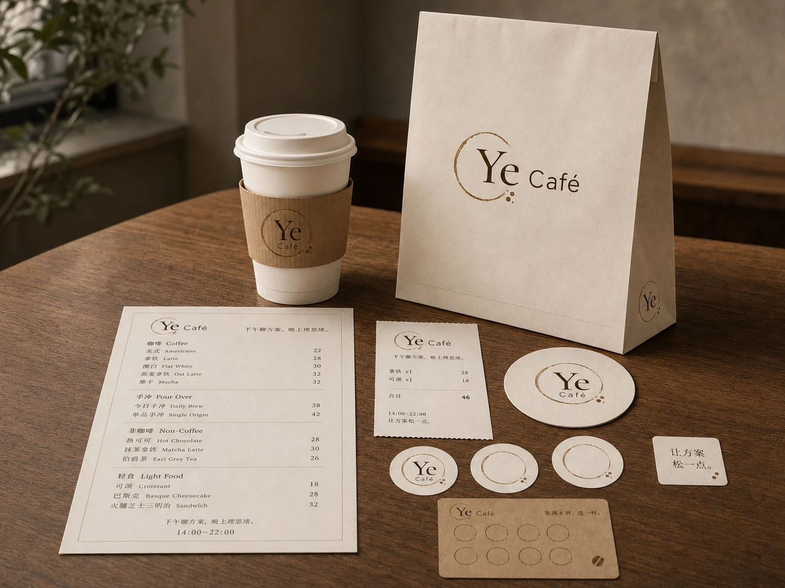
Ye Café包装与纸品全套
05｜设计台面用品
台面物料既要像这个品牌，也要让顾客看得懂、用得上。
外带包装完成后，我们把标识、色值和选定的包装图交给 AI，请它继续设计桌号牌、取餐牌和台面卡片。
功能信息
出图后，按顾客使用的顺序检查：能否看清桌号、知道去哪里取餐、读懂卡片信息？哪里不清楚，就让 AI 调整那一处的文字与布局。
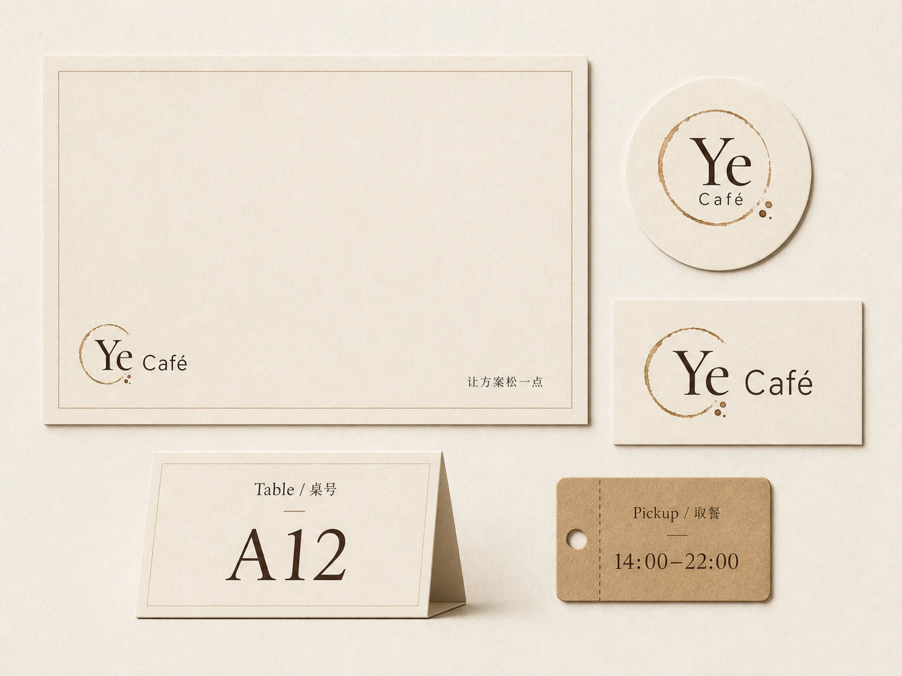
Ye Café台面与外带物料
06｜设计员工用品
服务人员身上的细节，也在告诉顾客这是一家怎样的店。
物料的样子确定后，把同一组品牌资料与物料参考图交给 AI，继续设计围裙和胸牌。说明温暖、克制的气质，以及布料和配色要求，让员工用品也接上这套视觉风格。
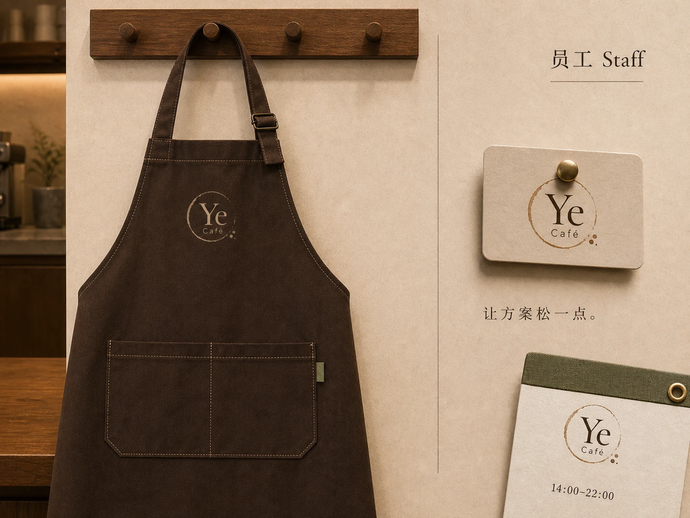
Ye Café员工服务物料
第三部分｜构建门店空间
07｜确定门头形象
先固定街上看到的门店外观，再向室内延展。
围裙、杯子与纸袋传达的气质，需要延续到门店入口。你把品牌场景、标识、色值和物料图发给 AI，说明希望出现招牌、玻璃界面、暖光与可见陈设，请它据此生成门头设计。
固定主参考
从结果里选定一张门头图，作为空间的主参考。后续室内图沿用它的标识、材质和色调，也要与门外看到的主要位置关系对得上。
判断完成
你可以检查招牌上的店名能否读清，以及门外的观感是否吸引人进去交谈、停留。确认之后，把它作为每次生成新视角时的共同参考。
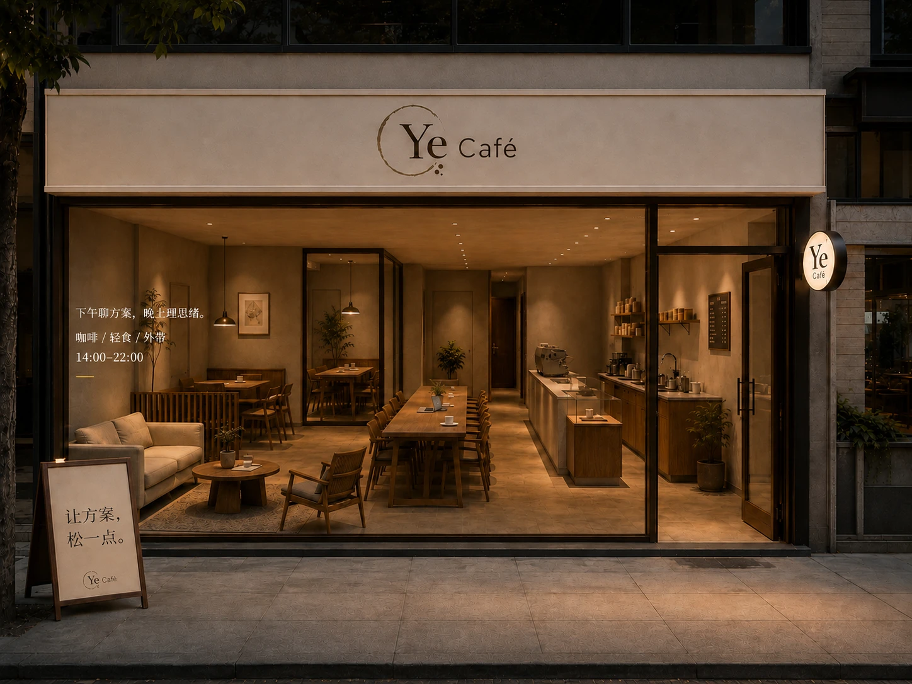
Ye Café门头主视觉
08｜规划空间布局
外观统一了，区域和通道也要对得上，这就需要俯视图。
门头图看不清室内各处怎样相连。上传它，说明入口、座位、吧台和后场的用途，让 AI 用俯视图呈现区域与通道，相当于从上往下看这家店的布局。
先核对区域与通道，修正位置关系，再把俯视图保存为辅助锚点。以后生成室内画面，同时给门头和俯视图：前者固定外观气质，后者约束空间布局。
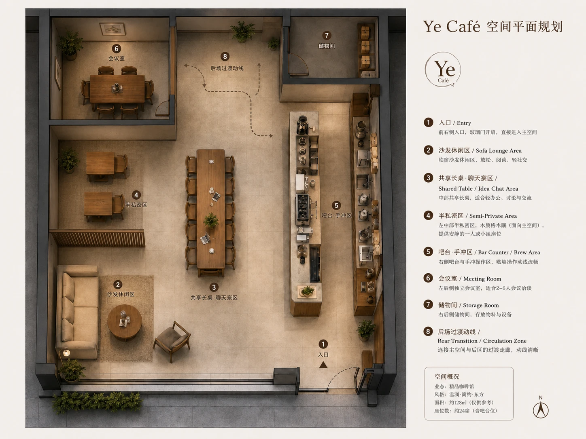
Ye Café空间俯视规划
09｜细化空间分区
吧台底图
吧台先做干净底图，把菜单和服务指引的位置留出来。
把门头与俯视图交给 AI，先生成吧台正面的底图，重点看结构、设备与光线，并留好菜单和指引的位置。确认这些要求落实后，再加文字，避免同时改空间和信息。
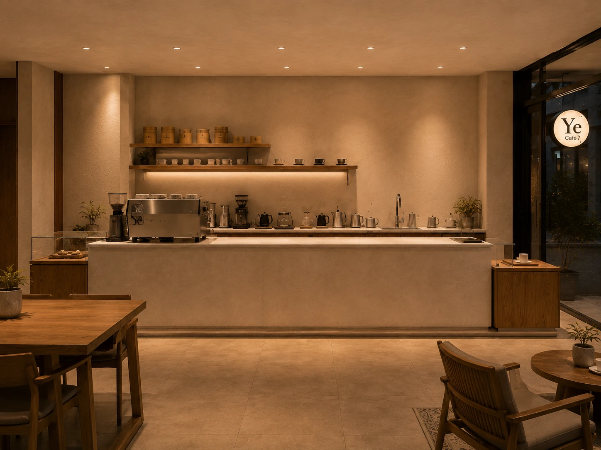
Ye Café吧台干净底图
吧台信息
把菜单和指引放进空间，才看得出顾客能否在这里顺利点单。
把确认的底图与商品分类、名称、价格、服务文案一起交给 AI，添加墙面菜单和台面立牌。出图后核对文字与价格，也看信息是否便于点单。
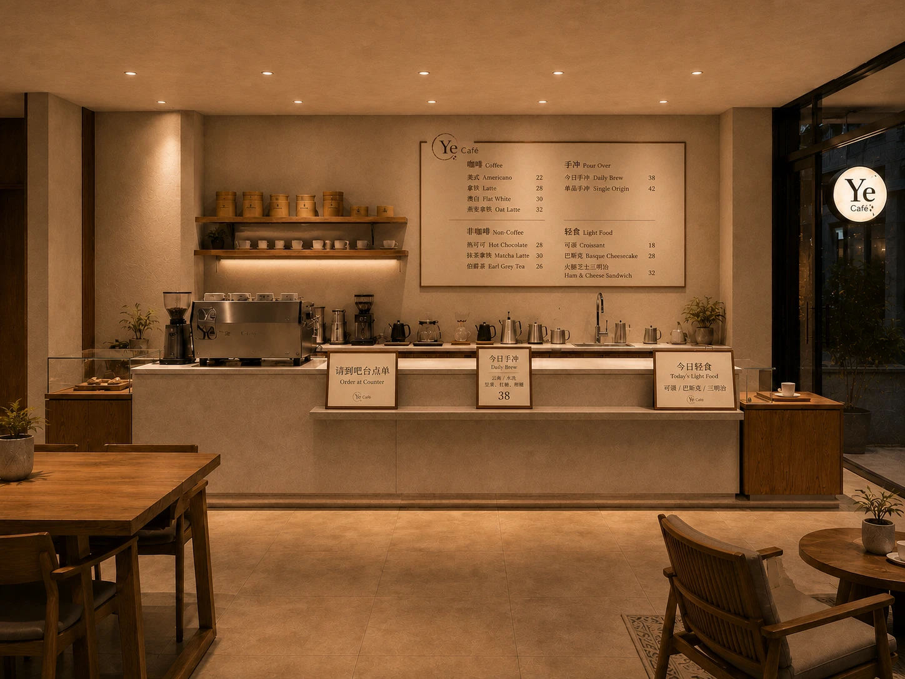
Ye Café吧台菜单与立牌
共享长桌
共享长桌要让人愿意展开讨论，也愿意多坐一会儿。
点单区域安排好了，我们继续把门头和俯视图交给 AI，请它生成中部共享长桌的画面。你说明这里供人轻办公、面对面讨论，让它围绕这些活动设计桌椅与灯光。
使用痕迹
你还可以要求 AI 在桌上加入适量纸张、笔记本和杯子，呈现正在使用的感觉。
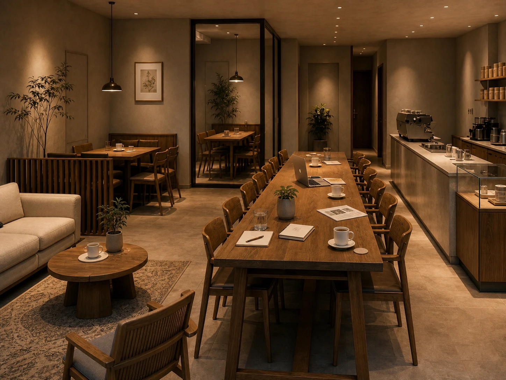
Ye Café共享长桌区
半私密区
用适当的分隔留出安静区域，同时保留咖啡馆的开放与松弛。
长桌适合交流，也有人想安静待一会儿。我们用同样的空间参考，请 AI 设计左中部的半私密区，告诉它这里用于独处、轻办公和小范围聊天。
分隔方式
可以要求 AI 用矮木格栅分隔座位，再安排陈设。检查时既看边界是否清楚，也看视线、光线与主空间是否仍有联系。
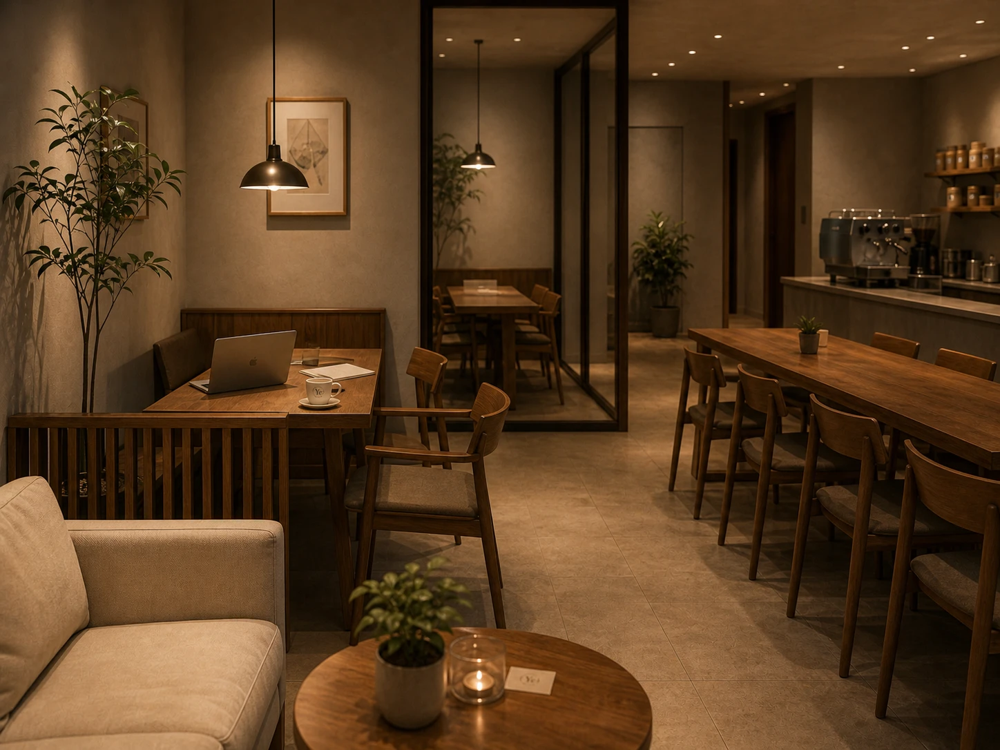
Ye Café半私密区
第四部分｜制作宣传内容
10｜制作开业海报
门店方案有了，海报要把“为什么值得来”说清楚。
共享长桌与半私密区给了顾客不同的停留选择，开业海报要把这份邀请传出去。我们把门头图、标识、色值与品牌表达一起发给 AI，请它围绕开业主题设计海报。
延续品牌语气
你可以把“让方案松一点”作为海报主文案交给 AI，要求它采用已经确定的门店画面，让其余表达围绕停留、交谈与思考展开。这样，画面和文案都有了明确方向。
接着，你把营业状态、到店理由与服务信息补充给它，包括“现已营业”、品牌表达、咖啡、轻食、外带和营业时间，让 AI 完成图文编排。拿到海报后，我们核对信息是否准确、清楚，有错漏的内容就交回 AI 修正。
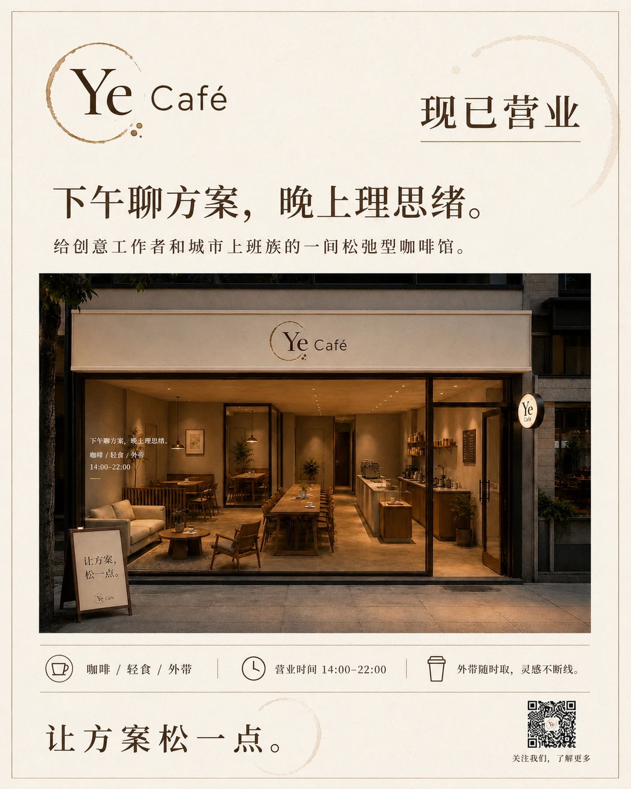
Ye Café开业海报
11｜建立社媒模板
开业海报确定后，再把它的视觉规则留成日常更新模板。
开业海报确认后，你把它作为参考发给 AI，要求它沿用字体、色彩、留白和语气，按下面四类主题设计社媒卡片。我们从生成结果中选定合适的版式，留作日常更新的模板。
日常更新时，只需把模板、新的主题图片与具体信息交给 AI，沿用原有风格生成卡片。先核对本次内容，再对照开业主视觉，检查是否仍像同一个品牌。
四类内容
| 卡片主题 | 沟通任务 |
|---|---|
| 现已营业 | 呈现门店形象、品牌表达与营业时间 |
| 今日手冲 | 介绍当日产品与特点 |
| 留一处安静，慢慢聊 | 展示半私密区与轻办公、交谈场景 |
| 轻食上新 | 传达新产品与供应信息 |
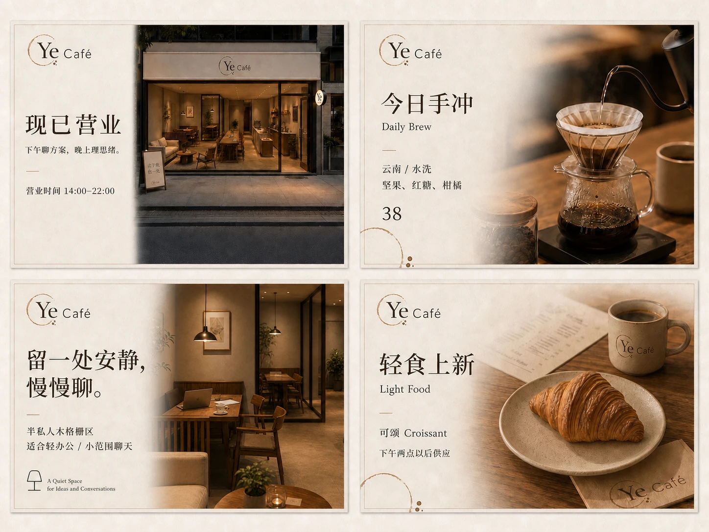
Ye Café四类社媒卡片
小结
换一个自己的品牌练习时，也让每张新图接上已经确认的规则。
- 建立品牌基础：场景提供取舍依据，标识与色彩确定共同的品牌身份。
- 延展品牌物料：包装用品验证实际应用，台面用品与员工用品把识别延伸到服务细节。
- 构建门店空间：门头固定视觉印象，俯视图约束位置关系，分区图逐项解决局部问题；新视角也要对照这两张参考检查。
- 制作宣传内容：开业主视觉呈现到店理由，社媒模板承接后续更新，让线上与线下保持一致。